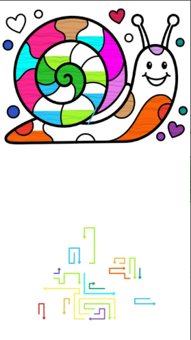
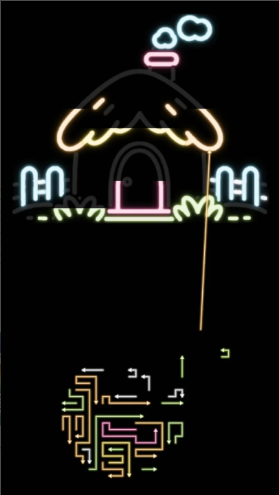
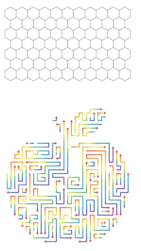

Arrows Paint ASMR is a carefully designed casual puzzle game created for players who enjoy calm, smooth, and satisfying gameplay. In today’s fast-paced digital world, many games focus on competition, speed, and complexity. However, Arrows Paint takes a different approach by offering a relaxing experience that helps users unwind and refresh their minds.
The idea behind the game is simple but effective. By combining smooth motion, clean visuals, and intuitive controls, the game creates a peaceful environment where players can focus without pressure. Whether you are taking a short break, relaxing after a long day, or simply looking for a light game to pass time, Arrows Paint fits naturally into your routine.
Unlike many complex mobile games, this game does not overwhelm users with instructions or difficult mechanics. Instead, it focuses on simplicity, making it accessible to players of all ages and experience levels.
The gameplay revolves around shooting arrows and matching them correctly to complete each level. While the concept sounds simple, the experience becomes engaging through visual feedback, smooth animation, and gradual progression.
Each level presents a small challenge that requires attention and timing. As players continue, they begin to understand patterns and improve their decision-making naturally without feeling forced.
The design philosophy is based on minimalism. There are no unnecessary distractions, no cluttered interfaces, and no complicated objectives. Everything is focused on creating a smooth and enjoyable gameplay loop.
The controls are designed to be extremely intuitive. Even first-time players can start playing immediately without needing tutorials. This makes the game accessible and user-friendly.
These features are not just technical elements—they directly impact how users feel while playing. The goal is to create a smooth and enjoyable experience without interruptions.
While the game is simple, a few strategies can improve your experience:
These tips help players enjoy the game more while gradually improving their performance.
The game starts with very easy levels to help players understand the mechanics. As you progress, the difficulty increases gradually. This ensures that players are not overwhelmed and can adapt naturally.
The progression system is designed to maintain a balance between challenge and relaxation. Even at higher levels, the game avoids frustration and keeps the experience enjoyable.
One of the biggest advantages of Arrows Paint is that it can be played offline. This means you can enjoy the game anytime without worrying about internet connectivity.
Offline functionality improves performance, reduces interruptions, and provides a smoother gameplay experience.
Players appreciate the game for its simplicity and relaxing nature. Many users prefer games that do not require heavy thinking or long sessions. Arrows Paint fits perfectly into this category.
The combination of smooth visuals and easy controls creates a satisfying experience that keeps players coming back.



The screenshots showcase the clean design and smooth animations of the game. Each visual represents the simplicity and clarity that define the overall experience.
From color transitions to motion flow, every element is designed to feel satisfying and easy on the eyes.
Is this game free?
Yes, the game is free to play.
Does it work offline?
Yes, you can play without internet.
Is it suitable for all devices?
Yes, it is optimized for all smartphones.
Is the game difficult?
No, it starts easy and progresses gradually.
Arrows Paint ASMR is a perfect example of how simple ideas can create powerful experiences. By focusing on smooth gameplay, relaxing visuals, and user-friendly design, the game offers something different from traditional mobile games.
Whether you want to relax, improve focus, or simply enjoy a peaceful game, Arrows Paint provides a consistent and enjoyable experience.
Download on Play Store